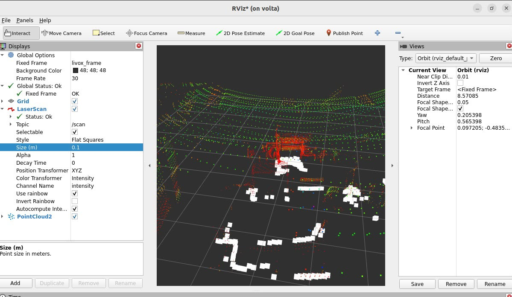
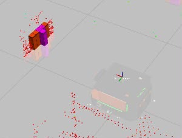
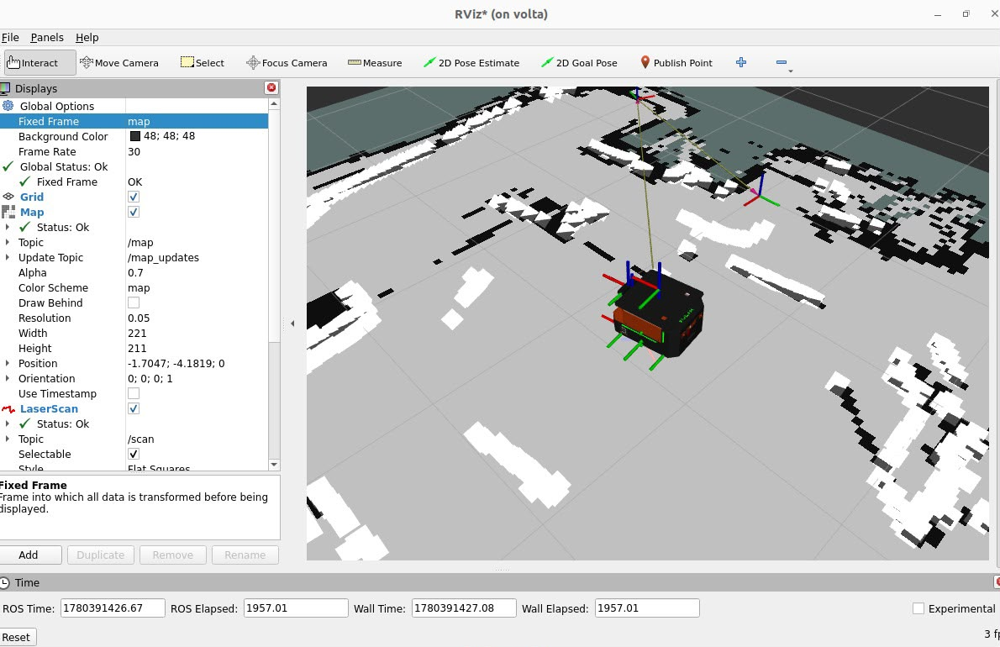
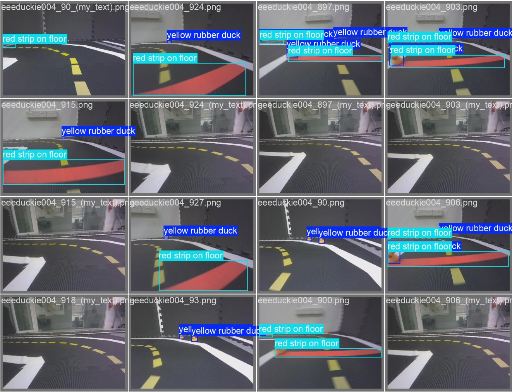

Mostly at the intersection of robotics and machine learning. More on github.com/energelpen.
Autonomous Mobile Robots (AMRs) Navigation in Transparent Environments for Hospital Applications
Ongoing
SP Advanced Robotics & Intelligent Control Centre · deployed on a Volta robot base
As part of my work at SP's Advanced Robotics & Intelligent Control Centre, I've been looking at how to get autonomous robots to detect glass and other transparent obstacles that standard LiDAR tends to miss. I implemented TOPGN, a method that detects glass from the intensity pattern in a LiDAR point cloud, and I'm extending it by adding ultrasonic sensing to cover cases the LiDAR intensity alone misses. It runs as a ROS 2 Nav2 costmap layer on a Volta robot base.
ROS 2LiDARUltrasonicC++

3D LiDAR point cloud (Livox)

Glass detected in the point cloud

Costmap & localisation on the Volta base
Face Recognition Door Access: 5G & Edge Computing
Repo
ET0743 · 5G / AIoT module, Singapore Polytechnic
A facial-recognition door access system built for the 5G/AIoT module. A Raspberry Pi streams video over a 5G connection to a laptop acting as the edge (MEC) node, which runs recognition locally so access decisions don't have to round-trip to a distant server. Door commands are signed and sent over MQTT, and the system sends a Telegram alert with a photo whenever someone unrecognised shows up at the door.
Computer VisionEdge Computing5G / IoTMQTTTelegram Bot API
Built for an upcoming SP School of EEE deep-learning module
A small live-inferencing demo on the Duckietown platform, built as a teaching example for an upcoming deep-learning module. The robot detects lane markings and objects (including the rubber-duck obstacles used in the course) in real time, so students can see inference actually running rather than just slides about it.
DuckietownDeep LearningReal-time InferencePython

Live object detection framesDemo recording
Diabetes Risk Predictor
Live Demo
ET0737 · Machine Learning & AI module, Singapore Polytechnic
For my ML/AI module, I built a short questionnaire that estimates diabetes risk and serves the result through a web app (ClearCheck). I compared nine model families under 5-fold cross-validation on a public CDC health-survey dataset, then deployed an XGBoost model with isotonic probability calibration, since the raw model's predicted probabilities were noticeably overconfident.